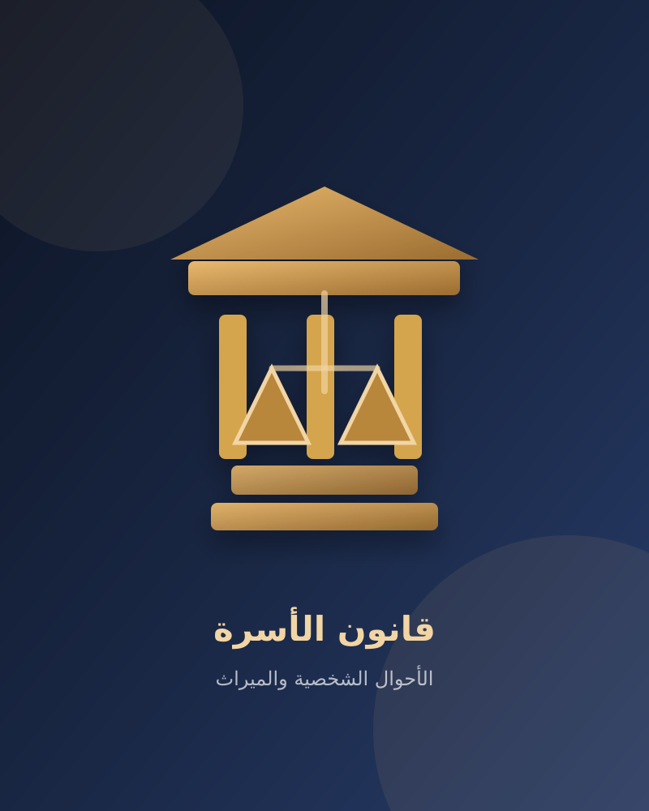

المديونيات والإثبات
كيف تجهز أدلة مطالبة مالية في الإمارات؟
تنظيم التحويلات البنكية والمراسلات والإقرارات وتحديد صفة المدين قبل اختيار المسار القضائي.
اقرأ الدليل الكامل ←صفحة تعريفية بالمكتبة القانونية التي تجمع القوانين الأساسية والأحكام والمقالات القانونية بصورة منظمة.
قوانين مدنية وتجارية وعمالية وجنائية.
ملكية، إيجارات، تسجيل، ومنازعات عقارية.
مبادئ قضائية داعمة للمذكرات.

شروحات مبسطة للمتعاملين والعملاء.
محتوى أصلي للموقع
المديونيات والإثبات
تنظيم التحويلات البنكية والمراسلات والإقرارات وتحديد صفة المدين قبل اختيار المسار القضائي.
اقرأ الدليل الكامل ←العقود والتوريد
كيفية مقارنة الالتزامات بالتنفيذ الفعلي وتوثيق التأخير وفصل أصل المبالغ عن التعويض.
اقرأ الدليل الكامل ←هذه الأدلة للتوعية العامة. النص القانوني النافذ وأحكام المحكمة المختصة هما المرجع عند دراسة أي ملف.